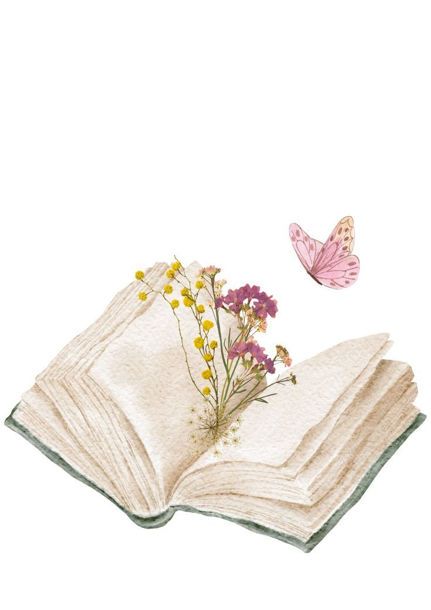
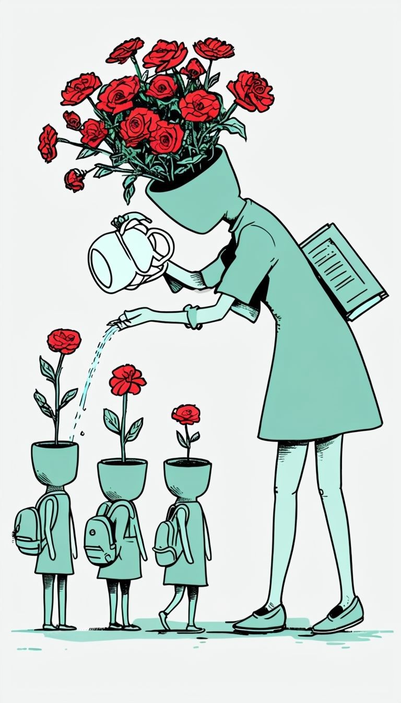

Master of Arts (M.A.) in English Literature
British Literature and Commonwealth Studies
2018 – 2020
Ms. Binderpal Kaur is an Assistant Professor of English Literature at Akal University. She specializes in British Literature and Commonwealth Studies.
She is actively engaged in teaching and academic research. Her work explores the intersections of literature, culture, and society, contributing to the academic discourse in her field.
British Literature and Commonwealth Studies
2018 – 2020

2015 – 2018
Qualified
2019
Akal University, Talwandi Sabo
September 2021 – Present
Explorations in literary theory, narrative structures, cultural texts, and evolving language practices.
9 mins read Explore
Reflections on classroom practices, inclusive learning, critical thinking, and evolving educational philosophies.
9 mins read ExploreWriting, visual storytelling, and interdisciplinary reflections on art, cinema, and personal narratives.
6 mins read ExploreI welcome thoughtful academic correspondence, research dialogue, and conversations grounded in literature, pedagogy, and critical inquiry.
If you wish to engage in scholarly exchange, conference discussion, or collaborative research, feel free to reach out.